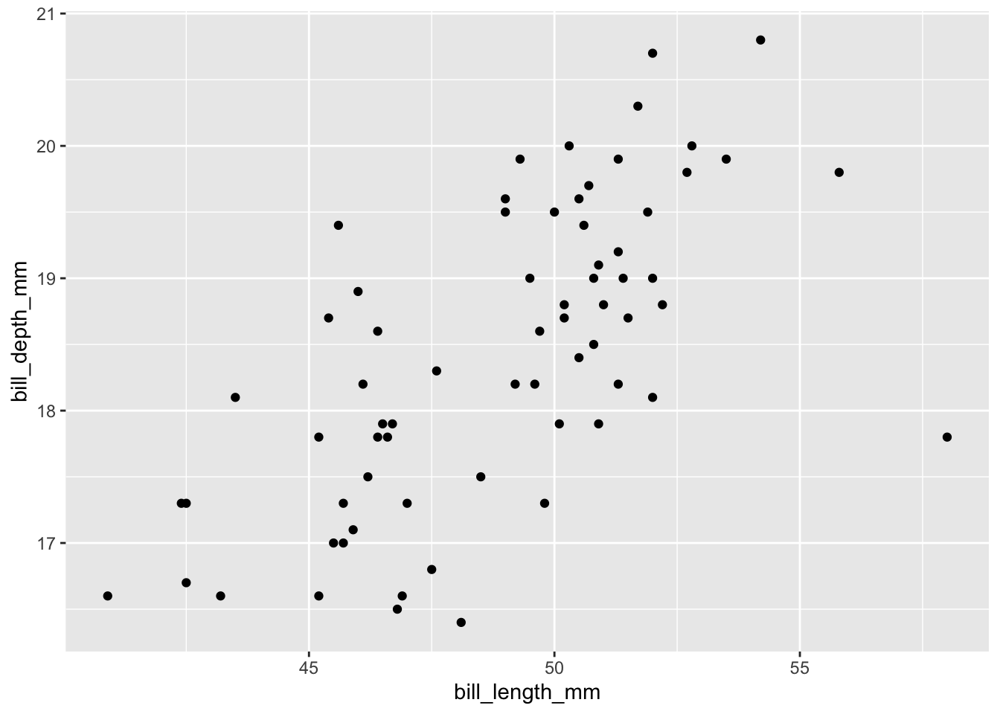

summary(cars) speed dist
Min. : 4.0 Min. : 2.00
1st Qu.:12.0 1st Qu.: 26.00
Median :15.0 Median : 36.00
Mean :15.4 Mean : 42.98
3rd Qu.:19.0 3rd Qu.: 56.00
Max. :25.0 Max. :120.00 This document highlights the features we employed to transition the ‘Intro_to_Quarto_STARTHERE.Rmd’ file to quarto, but the possibilities are endless. Try out some of the features to see what formatting options work best for your needs. Note: new text we added to this document is in black, while everything else from the .Rmd file is in gray.
include a picture of the final YAML header here so the knitted document is fully contained
Note: Indents matter, if you aren’t seeing the result you expect, you may not have indented your header correctly or you may have added the header under the wrong sub-section. Look to examples for help!
fontcolor: can be used to set the font color for the entire document. To counteract this in the output to show new additions to the text in black we used LaTex syntax for the section headers and in-line code execution to change paragraph coloring.
Quarto is still relatively new so you may not find readily available examples for all features, here are some of the places we looked for help:
Other resources we found helpful:

If you already use markdown or RMarkdown, you may ask yourself “why switch to quarto?” As new quarto users, our switch has been mostly driven by improved access to a wide variety of formatting options and tools to make the code and documents we already write better.
We set up this “highly sophisticated” document to reflect the default features and formatting already available in RMarkdown. Use this as your starting point to try out the following:
Transition an RMarkdown file into quarto
Set different formatting for PDF vs. HTML outputs
Add custom CSS formatting for HTML outputs
Explore options to include plots and figures, including alt-text
Change document formatting to include interactivity, columns, and figure labels
Change document font formatting
Add citations & equations
Quarto processes .qmd files similarly to .rmd files but takes a final step to process in pandoc that allows for some additional features to be included (e.g. super easy inclusion of citations).
Take a look at the .qmd document here to see how we added alt text and resized this image.

This is an R Markdown document. Markdown is a simple formatting syntax for authoring HTML, PDF, and MS Word documents. For more details on using R Markdown see http://rmarkdown.rstudio.com.
When you click the Knit button a document will be generated that includes both content as well as the output of any embedded R code chunks within the document. You can embed an R code chunk like this:
summary(cars) speed dist
Min. : 4.0 Min. : 2.00
1st Qu.:12.0 1st Qu.: 26.00
Median :15.0 Median : 36.00
Mean :15.4 Mean : 42.98
3rd Qu.:19.0 3rd Qu.: 56.00
Max. :25.0 Max. :120.00 Automatically add figure numbers using #| label (labels must start with ‘fig-’) and captions via #|fig-cap syntax:
You can also embed plots, for example:

Fun fact: When using YAML keys in code chunks you need to use the hashpipe #| and there MUST be a space before the key (e.g. ‘warning:’ above) and the setting for the key (e.g. ‘false’ above) otherwise you will get fun messages that this failed.
Note that the echo = FALSE parameter was added to the code chunk to prevent printing of the R code that generated the plot.
penguins %>%
filter(species=="Adelie") %>%
ggplot() +
geom_point(aes(x=bill_length_mm, y=bill_depth_mm))Warning: Removed 1 rows containing missing values (geom_point).
Figure 2: Another example plot.
penguins %>%
filter(species=="Chinstrap") %>%
ggplot() +
geom_point(aes(x=bill_length_mm, y=bill_depth_mm))
Figure 3: Another example plot identical to Figure 2 but looking at a different penguin species.
LaTex formatting can be used to format a nice equation indexed by species of penguin ‘s’. Take a look at the .qmd file to see how we embedded and numbered this equation (equation labels must start with ‘#eq-’).
\[ y = m_sx + \beta_s \tag{1}\]
In visual editor mode you can select Insert –> Citation –> select source for your citation, try selecting the ‘DOI’ option and provide the DOIs from the .Rmd document to automatically make these available. Then all you need to do is use pandoc citation syntax ([@ Author2022; @ Author2020] with no space between @ and the author tag) in the text. When you render the document these citations will automatically be added to the auto-generated Reference list. We can use similar syntax and figure labels to automatically reference figures in the text (e.g. removing the space from ‘@ fig-press-temp’ will result in ‘Figure 1’ being added in the corresponding location of the output). Equation labels may also be referenced in this way.
Here is an example paragraph. Isn’t it great. Sometimes we cite literature in our text like this (Kerr, Cadrin, and Secor 2010; Pershing et al. 2015). But then, we need to include a references section. We may also mention the results shown in figures (Figure 1, 2, 3) and discuss the calculations in Equation 1.
No more need to compile the reference section ourselves, now it is automatically generated to include only the pandoc references in the text above.
Now that we’ve covered some of the basics take our ‘Intro_to_Quarto_STARTHERE.Rmd’ file and try adapting it to use quarto. Here are a few suggestions to get you started:
First turn the .Rmd file into a .qmd file
Change the theme
Change the font or text color
Add images with alt text
Change a plot figure
Add a new plot with a caption and automatic figure numbering
Add alt-text to a plot
Resize an image or plot
Change the type of document generated
Add different formatting options for HTML vs. PDF outputs
Add a new citation to the text and reference list
When you are done, add yourself to the authors key in the YAML header of your new .qmd file and upload a copy to the ‘Tidal_Exchanges/Tutorials/Intro_to_Quarto_Solution_files’ folder on GitHub so everyone can see your quarto solution! Be sure to include your last name in the file name (e.g. Hart_Intro_to_Quarto_Solution.qmd)